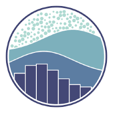

Bike Sharing Using Exploratory Data Analysis (EDA)(March 2025)
Data Analysis With Python Project — Coding Camp powered by DBS Foundation 2025

Understanding user behavior is essential for optimizing smart-city transportation systems. In this project, I analyzed the Bike Sharing Dataset to uncover patterns in hourly and daily bike demand. Using data wrangling, cleaning, and exploratory data analysis (EDA), this project answers key business questions such as: How does bike usage vary throughout the day? How do weather and seasonal factors influence demand?
📊 Datasets
- The dataset comes from Kaggle and contains 2 files, namely the day.csv file and the hour.csv file.
🛠️ Tools & Libraries

🧩 Project Stages
- Data Gathering : Importing two datasets containing hourly and daily rental information.
- Data Assessment : Checking data types, missing values, duplicates, and summary statistics.
- Data Cleaning :
- Exploratory Data Analysis :
- Business Insights :
- visualizations with Streamlit :
-
➡️ Converting date column
(dteday)
into datetime format.
-
➡️ Removing unnecessary columns
(instant).
-
➡️ Ensuring all numerical fields are valid.
-
(Key insights explored)
-
➡️ Bike usage patterns by hour.
-
➡️ Trends across months & seasons.
-
➡️ Influence of temperature, humidity, and weather.
-
➡️ Differences between casual vs registered users.
-
➡️ Peak usage occurs during commuting hours (morning & early evening).
-
➡️ Summer & fall show the highest demand.
-
➡️ Bad weather significantly reduces usage.
-
Visualizations shown
-
➡️ Initial Data
-
➡️ Hourly Loans Chart
-
➡️ Seasonal Trend Chart
🎯 Results
- Visualizations show a significant increase in bike usage during 07:00–09:00 and 17:00–19:00 , aligned with commuting hours.
- The lowest usage occurs between 00:00–05:00, when city activity is minimal.
- The highest rental demand appears in Fall, followed by Summer.
- The lowest demand occurs in Spring and Winter, likely influenced by colder temperatures and unfavorable weather.
- Weather factors particularly warm temperature and clear skies strongly correlate with higher bike rental demand.
🌐 Bike Sharing Using Exploratory Data Analysis (Streamlit)
🌐 Bike Sharing Using Exploratory Data Analysis (GitHub)
← Back to Projects